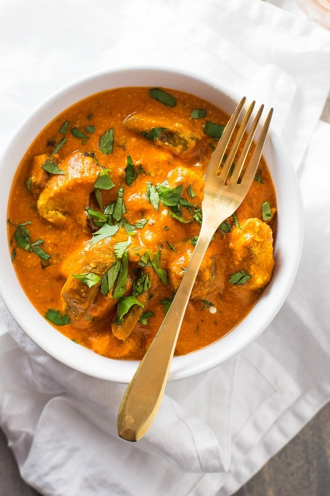

Chicken Tikka Masala

Description
Chicken tikka masala is a classic curried dish with soft tender chunks of char-grilled chicken, simmered briefly in a delicious & super aromatic tikka masala sauce/gravy. The dish comprises of 2 components - one is chicken tikka and the other is the masala, which is the gravy or sauce in which the tikkas are shimmered.
Ingredients
- 630 grams chicken boneless
- 1/2 cup Greek yogurt
- 1/2 to 1 teaspoon red chilli powder
- 1 teaspoon garam masala
- 1/4 teaspoon turmeric
- 1 teaspoon coriander powder
- 1/2 teaspoon cumin powder
- 1/2 teaspoon salt
- 1 tablespoon lemon juice
- 1 tablespoon kasuri methi
- 1 tablespoon ginger garlic paste
- 1 tablespoon oil
For the tikka masala
- 3 tablespoons oil
- 1(1/2) cups onions
- 1 green chilli (optional)
- 1 teaspoon salt
- 1 tablespoon ginger garalic paste
- 1 teeaspoon red chilli powder
- 2 teaspoons garam masala
- 1 tablespoon coriander powder
- 1(1/2) teaspoons cumin powder
- 1 to 2 teaspoons sugar (adjust to taste)
- 500 grams fresh tomatoes
- 2 cups hot water
- 1 tablespoon kasuri methi
- 1/2 cup heavy cream/whipping cream
For Garnish
- 3 tablespoons heavy cream
- 3 tablespoons coriander leaves
Steps
Chicken Marinade
- Cube chicken to 1 to 1(1/2) inch pieces. Add them to a mixing bowl. Make sure there
is no excess moisture in your chicken. If you want you may pat dry with a few
kitchen tissues.
- Add red chilli powder, garam masala, cumin powder, coriander powder, turmeric,
salt, lemon juice, oil, ginger garlic paste, yogurt and kasuri methi. Skip the lemon
juice if your yogurt is sour.
- Mix well. Cover with a cling wrap and refrigerate for minimum of 8 hours and up to
48 hours. If you are in a rush, you may cut down to 3 hours.
Make Tikka Sauce
- Heat oil or ghee in a pot or pan. Add onions and sprinkle 1 teaspoon salt. Saute
until deep golden.
- Add ginger garlic paste and green chilli. Saute until aromatic, for 40 to 60 seconds.
- Reduce the heat to low. Add red chilli powder, coriander powder, garam masala
and cumin powder. Stir well quickly.
- Pour tomato puree and cook on a medium high heat until the onion tomato masala
becomes really thick and begins to leave the sides of the pan. It also turns
fragrant.
- Pour 2 cups of hot water and cover. Simmer until thick, yet of pouring consistency.
How to Make Chicken Tikka Masala
- Grill in Oven : While the gravy simmers, thread the chicken to the metal skewers
or soaked bamboo skewers and place them in a prepared tray. Bake them in a
preheated oven at 460 F or 240 C for 9 to 10 mins. Turn them to the other side
with a tong and grill then for another 9 to 10 mins. To char the chicken, broil for 2
to 3 mins or until slightly charred.
- Or In a Skillet: Pour 1 tbsp oil to a skillet and heat it well. Place the chicken tikka
one by one, spacing them apart. Cook on a medium high heat for 3 mins, turn
them to the other side with a tong and cook for another 3 mins, until charred and
not essentially fully cooked. Remove to a plate and Cook in batches.
- Or In the Air fryer: Thread on skewers and place them in the basket or in the tray.
Air fry for 6 mins, at 400 F or 200 C. Turn them with tongs and air fry for another 6
mins. If they dry out, you may baste with marinade and continue for another 2
mins, until slightly charred.
- When the tikka masala turns thick, add sugar and the cream (or cashew cream,
check notes to make your own). Stir well and cook for a few minutes until thick,
creamy and aromatic.
- Add the grilled chicken tikka and crushed kasuri methi. (Make sure your gravy has
reached a thick gravy consistency/serving consistency, before adding chicken).
Stir and cook for 2 to 3 mins until chicken tikka is soft and tender. Taste test and
add more salt and sugar if needed.
- Turn off and garnish with cream and coriander leaves. Serve chicken tikka masala
with Butter Naan, roti, paratha, basmati rice or Jeera rice.